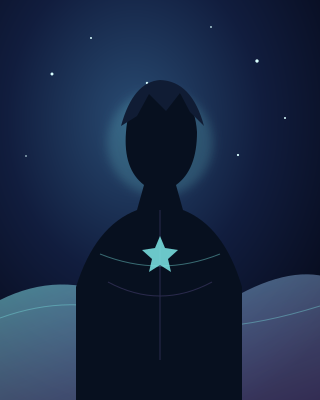

Combate
Iniciativa, heridas, acciones heroicas y el precio de tentar al destino.
Ver reglasUna campaña a través del mar astral

“Ahí fuera hay muchos mundos... pero todos comparten el mismo cielo.”
Unámoslos. Ese es mi sueño.
Comenzar la travesía01 · Antes de zarpar
El pacto de la tripulación
Definid juntos el tono de la aventura, los límites de la mesa y aquello que vuestra tripulación promete proteger.
Ver contrato pirata02 · Cartas de navegación
Todo viaje necesita un rumbo. Estas reglas mantienen la aventura ágil, peligrosa y llena de decisiones.
Iniciativa, heridas, acciones heroicas y el precio de tentar al destino.
Ver reglasRutas imposibles, recursos escasos y maravillas ocultas más allá del mapa.
Ver reglasReputación, vínculos, promesas y las consecuencias de cada palabra.
Ver reglas03 · Estelas en el firmamento
Cada decisión deja una marca en el cielo. Conserva aquí las hazañas, pérdidas y descubrimientos de la tripulación.